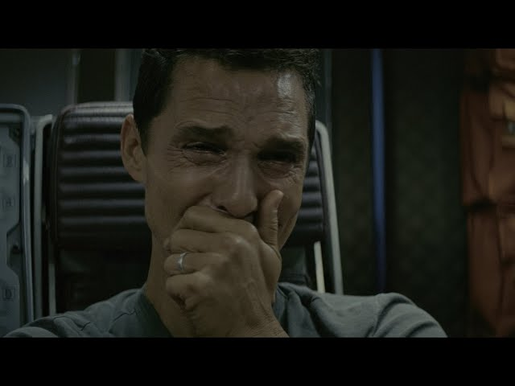
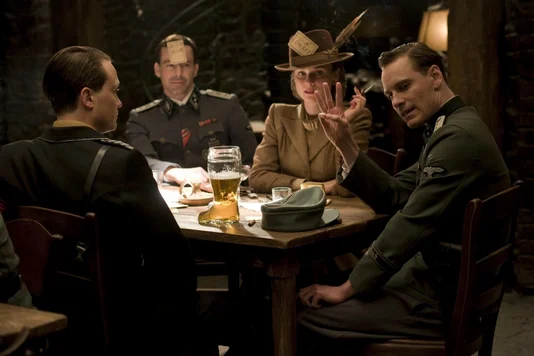
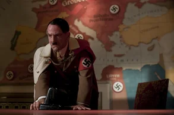
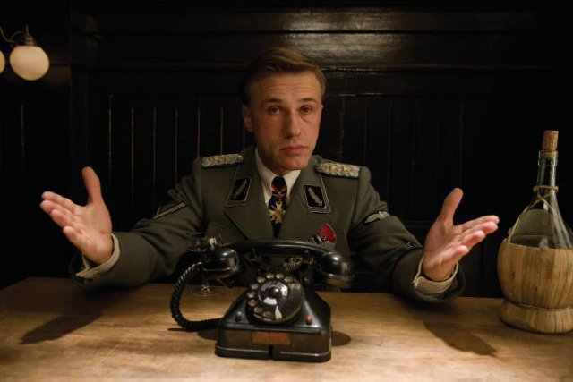
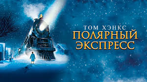
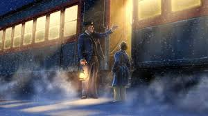
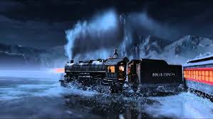

Мои любимые фильмы
- Интерстеллар
- Бесславные ублюдки
- Полярный экспресс
Интерстеллар
Краткое содержание
Наше время на Земле подошло к концу, команда исследователей берет на себя самую важную миссию в истории человечества; путешествуя за пределами нашей галактики, чтобы узнать есть ли у человечества будущее среди звезд.
Кадры из фильма
 |
 |
О фильме
| Год | 2014 |
| Страна | США, Великобритания, Канада |
| Жанр | фантастика, драма, приключения |
| Режиссер | Кристофер Нолан |
Бесславные ублюдки
Краткое содержание
В оккупированной немцами Франции на глазах Шошанны Дрейфус по приказу нацистского полковника Ганса Ланды расстреливают ее семью. Шошанне чудом удается бежать в Париж, где она меняет имя и становится владелицей кинотеатра. Тем временем где-то в Европе лейтенант Альдо Рэйн организует группу еврейских солдат для беспощадного уничтожения фашистов...
Кадры из фильма
|  |  |  |
О фильме
| Год | 2009 |
| Страна | Германия, США |
| Жанр | боевик, драма, комедия, военный |
| Режиссер | Квентин Тарантино |
Полярный экспресс
Краткое содержание
Неожиданно в канун Рождества мальчик, не веривший в существование Санта-Клауса, получает возможность отправиться к нему в гости на Северный полюс. Во время путешествия на поезде «Полярный экспресс» юный герой находит новых друзей и получает полезный урок.
Кадры из фильма
|  |  |  |
О фильме
| Год | 2004 |
| Страна | США, Австралия |
| Жанр | мультфильм, мюзикл, фэнтези, комедия, приключения, семейный |
| Режиссер | Роберт Земекис |